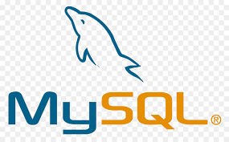

|
|
Soy Carlos Augusto Billy Quispe Velasquez, alumno de 3er ciclo de la carrera de "Diseño y Desarrollo de Software" en el Instituto de Educación Superior en Perú (TECSUP).
Tengo 20 años de edad,domino el idioma inglés hasta un grado Intermedio ya finalizado y sigo en camino a terminar el grado Avanzado en este idioma. Tuve una formación
profesional en la Universidad Nacional de San Agustín (UNSA) alrededor de unos 3 años.
Me apasiona ir al gimnasio y superarme cada dia mas en este aspecto de mi vida, por otra parte me gusta programar en lo que respecta a proyectos en Python, donde trato de
aprender cada dia algo nuevo. Por último me encanta leer al menos 1 hora en el dia acerca de temas varios,ya sea por cultura general, etc.
| HTML | CSS | PYTHON | MySql |
|---|---|---|---|
 |
 |
 |
 |